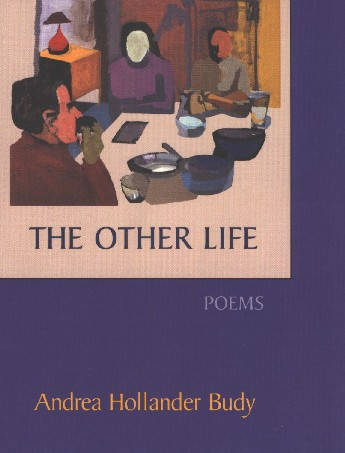

‚Üê Back to MarckBeggs.com | Arkansas Literary Forum archive, preserved as originally published‚Üê Back to MarckBeggs.com | Arkansas Literary Forum archive, preserved as originally published
‚Üê Back to MarckBeggs.com | Arkansas Literary Forum archive, preserved as originally published‚Üê Back to MarckBeggs.com | Arkansas Literary Forum archive, preserved as originally published

The Other LifePoems by Andrea Hollander Budy
Story Line Press
$12.95, 80 pages.
ISBN: 1-885266-98-7
ì...an
evocative gathering of narrative poems revolving around the theme of
the
road not taken,...these poems explore that nameless longing engendered
by
alternative possibilities: What Might Have Been.î óRita Dove
ìThis
book works magic: there are moments, feelings, truths in life that we
cannot
speak of with words...because they fail to convey the depth, the
heart
of the matter...yet these poems move into the realm of the unspeakable
and
speak eloquently...saying what you felt and understood (or came close to
comprehending)
but could never vocalize.... This is a book you will want to
share,
to give to those that you love because it is pure, timeless, and
needed.î
óShea Hembrey
ìIf
you need a reason to reaffirm your belief in life, its ordinary,
wondrous
details, youíll want to explore Andrea Hollander Budyís second
collection
of poetry, THE OTHER LIFE.î óJo McDougall
ìIíve
known many of the poems in THE OTHER LIFE individually and liked them
one
by one. But reading them together in the collection provides a
cumulative
power that is nearly overwhelming. THE OTHER LIFE is a superb
and
utterly mature bookóthe work of an artist not just a writer.î óDana
Gioia
Sample Poems
|
Delta
Flight 1152 After
the first drink, you can be is
answer this manís questions with truths of
master magicians,
or to a conference of physicists new.
Tell him youíre sad because youíre on your way with
her fiancÈ. Wipe your eyes, you
had to give up, the job. Youíre the one to
your desk at the office. How lonely he was, of
lunch on the rooftop, how for you this
man, his drink finished, ice diluted into
your invented life. Heíll offer his handkerchief.
hand
you his card. His voice unsteady, an
only child on her way to
live a moral life, whose troubled heart has never lies,
you could turn toward this stranger
|
Pensioner,
Leicester Square, London My
heart tightened when I saw him but I did not stop. I
walked by nodding, smiling, hoping that when I
returned Later
I thought Even
in its tiny despair high in its own
steeple. rich and singular as
prayer? Or
do they smile the thin tune, dull and
off key, the locked church of
another, |
Wound When
you asked if I wanted to see |